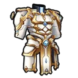

Armadura da Invencibilidade
Armadura pesada · Tier 14 · Nível 43
Aster, o Imprudente, fazia jus à reputação. Mas, no fim das contas, a armadura que era invencível, não o dono dela.
Atributos
Defesa
680
Vida
42
Economia
Valor
14.100.000
Tempo de fabricação
2d 17h
XP do comerciante
355.000
Trabalhadores: Ferreiro 37, Mestre 33, Alfaiate 30
Receita


Marcos do projeto
4
Tempo de fabricação -20%
10
-117 Ferro
18
Valor +25%
25
-2 Essência
40
Chance de qualidade +1